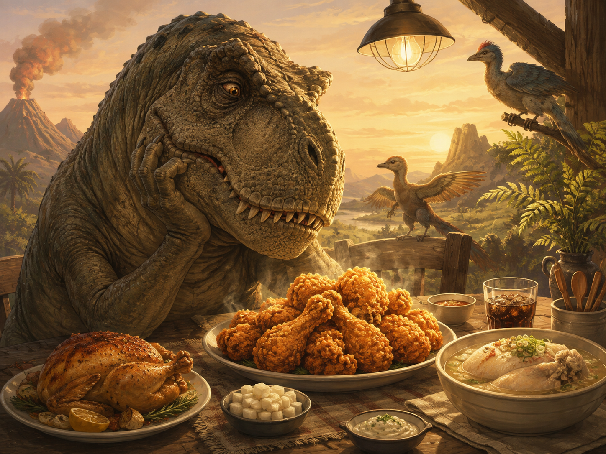

티라노사우루스의 식탁

치킨은 왜 이렇게 맛있을까.
구워도 맛있고, 튀겨도 맛있고, 삶아도 맛있고, 쪄도 맛있다. 양념을 발라도 맛있고 소금만 뿌려도 맛있다. 식었을 때조차 한 조각쯤은 다시 손이 간다.
조리법이 달라지면 다른 음식이 되는 것 같지만, 결국 닭이다.
닭은 어떻게 해도 자기 몫을 해낸다.
돼지고기는 부위에 따라 기분이 다르고, 소고기는 가격을 보면 마음이 먼저 무거워진다. 생선은 가시를 발라내는 동안 식사가 작은 노동이 되기도 한다.
하지만 치킨은 다르다.
상자를 여는 순간부터 이미 성공한 저녁이다.
바삭한 껍질을 먼저 먹을지, 촉촉한 살을 아껴둘지 고민하는 것조차 행복한 고민이다. 닭다리를 하나 집으면 세상을 조금 먼저 차지한 기분이 들고, 날개를 먹으면 먹은 양에 비해 이상하게 많은 일을 한 것 같다.
무엇보다 매일 먹어도 맛있다.
어제 프라이드치킨을 먹었어도 오늘 닭갈비를 먹을 수 있다. 점심에 삼계탕을 먹고 저녁에 닭꼬치를 보아도 딱히 배신감이 들지 않는다.
같은 닭인데 서로 모르는 사이처럼 각자의 맛을 낸다.
이쯤 되면 닭은 식재료가 아니라 하나의 거대한 장르다.
몸에도 좋은 것 같다.
단백질도 많다고 하고, 가슴살은 운동하는 사람들이 늘 먹는다. 물론 내가 좋아하는 것은 대체로 가슴살보다 껍질이고, 삶은 닭보다 기름 속에서 찬란하게 완성된 닭이지만, 어쨌든 출발점은 같은 닭이다.
따라서 치킨을 먹으며 건강을 생각하는 일도 아주 틀린 것은 아닐 것이다.
조금 멀리 돌아가고 있을 뿐이다.
닭이 공룡의 후손이라는 이야기도 있다.
그 말을 처음 들었을 때 나는 닭을 새롭게 보게 된다. 마당을 종종거리며 걷는 작은 닭의 몸속에 오래전 거대한 공룡의 흔적이 남아 있다는 것이다.
그렇다면 티라노사우루스는 얼마나 행복했을까.
눈앞에 돌아다니는 것들이 전부 닭고기와 먼 친척이었을 테니 말이다. 티라노사우루스의 식탁에는 매일 거대한 닭다리와 닭가슴살과 닭날개 비슷한 것들이 끝없이 올라왔을지도 모른다.
다만 한 가지 문제가 있다.
그 시절에는 튀김기가 없었다.
양념치킨 소스도 없었고, 간장과 마늘과 청양고추도 없었다. 치킨무도 없었으며, 차갑게 식힌 탄산음료도 없었다.
티라노사우루스는 닭고기를 듬뿍 먹었을지 모르지만, 치킨은 먹어보지 못했다.
거대한 몸과 날카로운 이빨을 가졌으면서도 바삭한 껍질의 존재를 몰랐던 것이다.
갑자기 조금 불쌍해진다.
생태계의 정점에 서 있더라도 후라이드 한 조각을 모른다면, 과연 완전한 승리라고 할 수 있을까.
나는 오늘도 치킨 상자를 연다.
따뜻한 김이 올라오고, 튀김옷이 바삭하게 부서진다. 지구에서 수천만 년을 기다린 끝에 공룡의 후손은 마침내 기름에 튀겨지고 양념에 버무려져 우리 앞에 도착한다.
티라노사우루스가 누리지 못한 문명의 맛이다.
치킨이여 영원하라.
그리고 공룡들이여, 조금만 늦게 태어나지 그랬니.